Round two: ten variations on the Swiss direction. Each shows the same moment of the same game. Select both 4s and press Play to see a card fly to the pile and an opponent answer; Replay in the corner resets it. The corner switcher also shows the home and results screens.
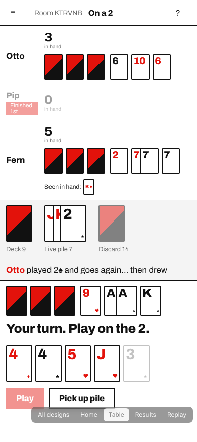
RedThe one you picked, tidied: Archivo, black rules, signal red. The back splits red and black on the diagonal.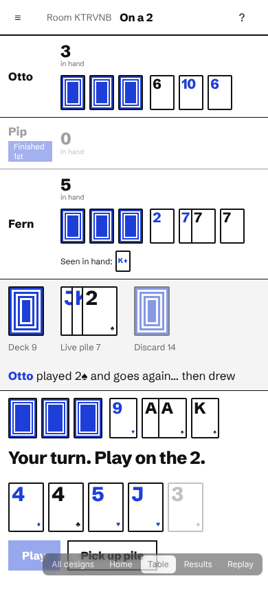
Blue squaresSame grid in ultramarine. The back is a set of nested squares, like a target seen from above.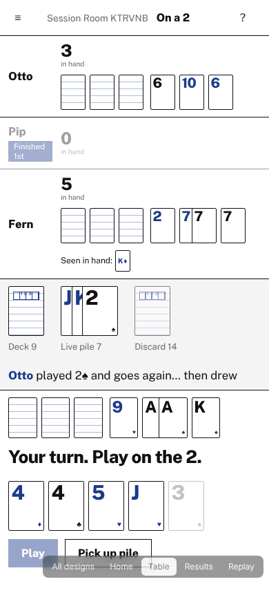
Exam paperInspired by the IB exam room: ruled answer lines, candidate-number boxes and an ink-blue accent.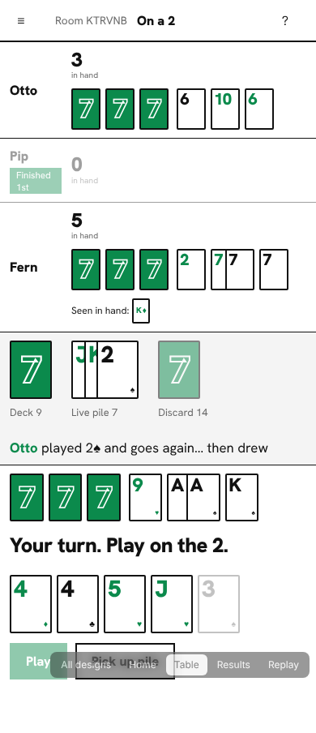
SevenSeven is the top IB grade, so the back is one big outlined 7. Green accent, Hanken Grotesk.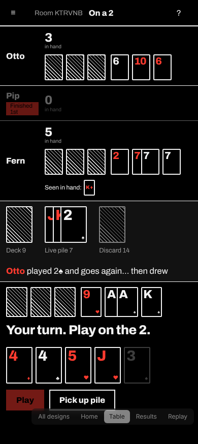
NightThe grid inverted: pure black, white rules, red for your turn. Backs are fine white hatching.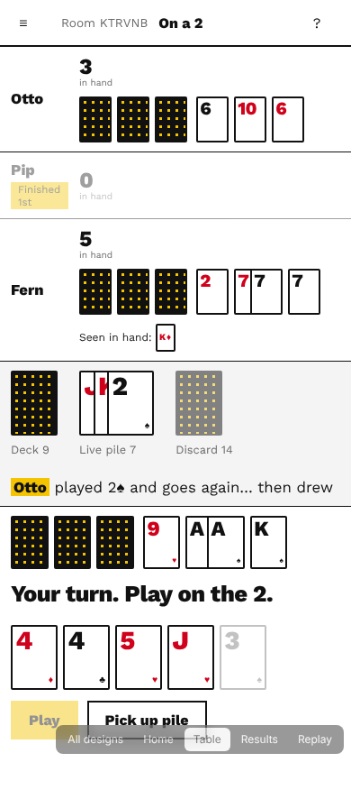
DotsYellow highlighter on black and white. The back is a black card with a grid of yellow dots.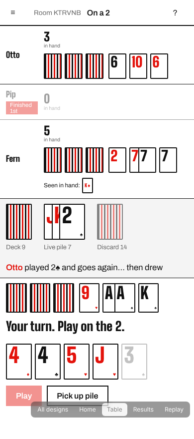
TallCondensed display type for huge numerals in little space. Backs are a tight run of vertical stripes.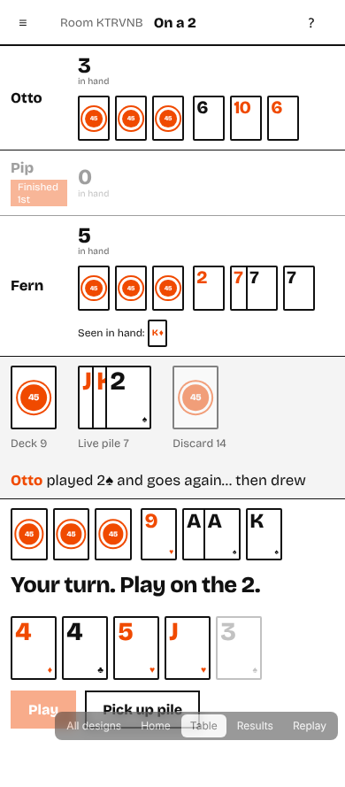
Forty-fiveA nod to the 45-point diploma: each back carries a round 45 seal. Orange-red and Bricolage Grotesque.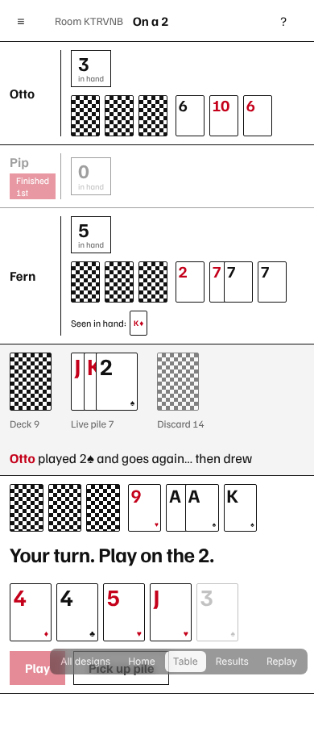
LedgerEverything sits in cells, like a results table. Hairline grid, checkerboard backs, Familjen Grotesk.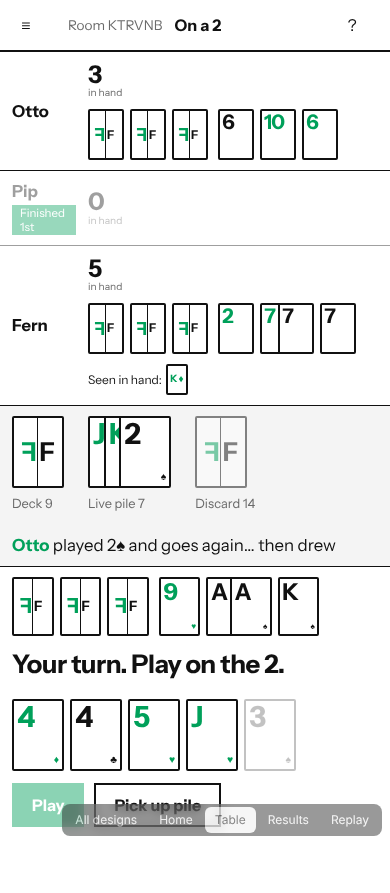
FlipThe name made literal: each back shows an F and its mirror image. Black, white and one green.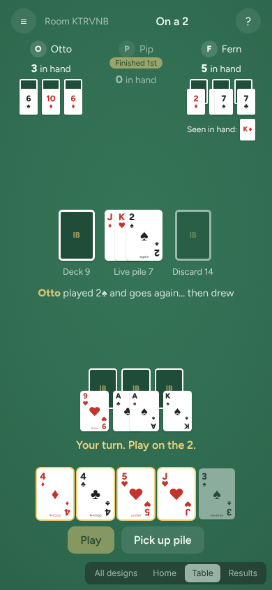
Quiet feltA flat green table with nothing extra: no rail, no glow, plain white cards.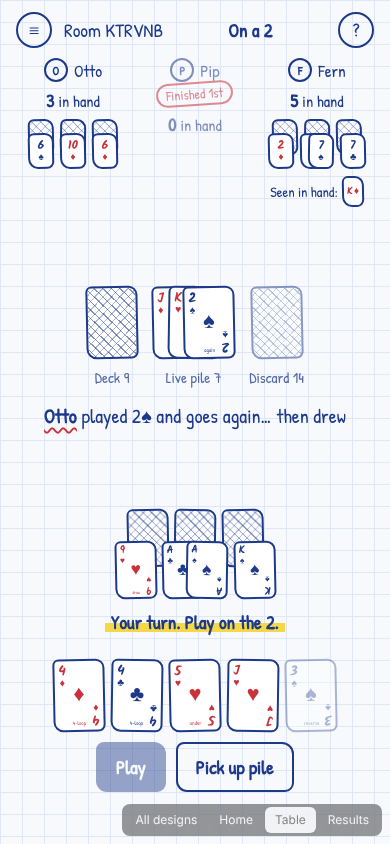
NotepadBlue ballpoint on graph paper, like a scorepad on the kitchen table.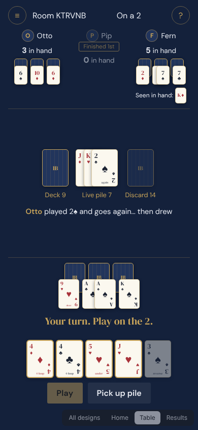
Navy and brassA members' card room: deep navy, ivory cards, brass details.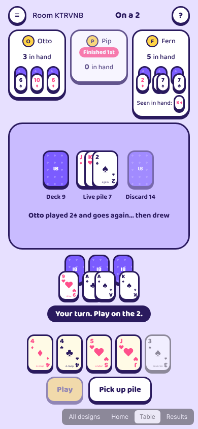
Lilac popA chunky, friendly mobile game: thick outlines, solid shadows, big tap targets.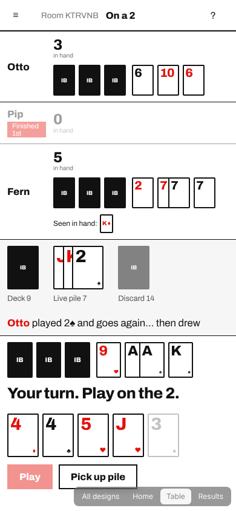
SwissNo table at all. A strict grid of rows, one red, giant numerals.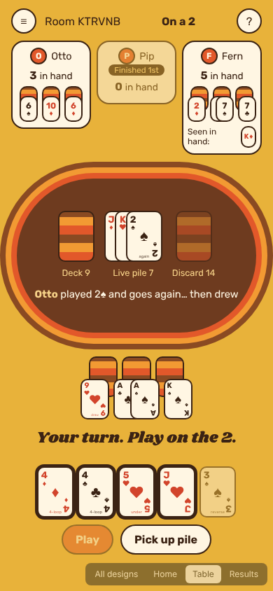
Game nightA 1970s board-game box: mustard, brown and orange, striped card backs.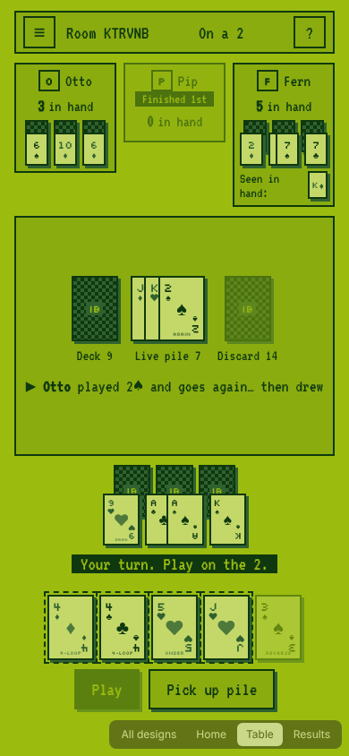
PocketA four-shade handheld screen with pixel type and hard edges.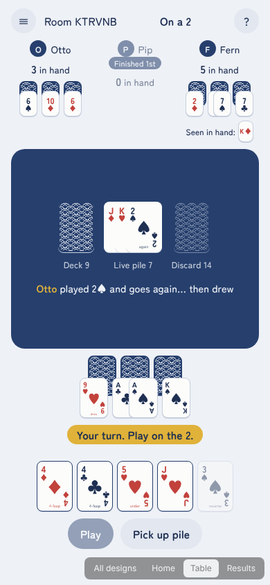
IndigoIndigo-dyed cloth and pale paper, with wave-patterned card backs.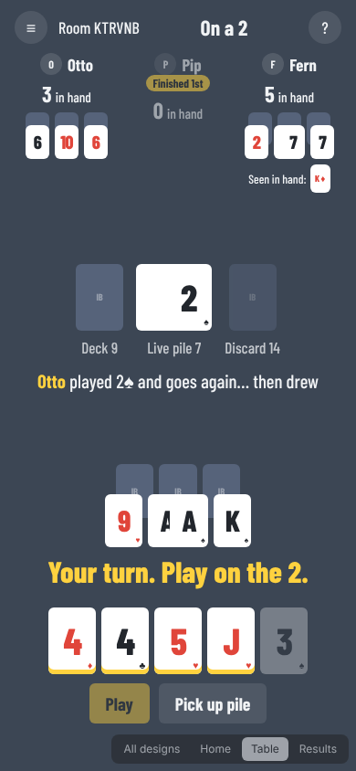
Big numbersCards reduced to one huge numeral each, readable from across the room.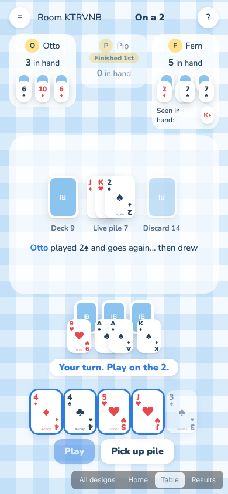
PicnicDaylight: a blue gingham cloth, soft paper cards, rounded everything.